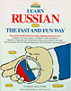
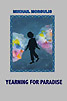
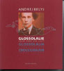
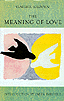

Page index / publicationsTom Beyer's Publications welcome.shtml courses.shtml personal.shtml For those who have purchased the texts, you may download for free audio files in mp3 format to replace the audiocassettes originaly supplied.     View original page ↗